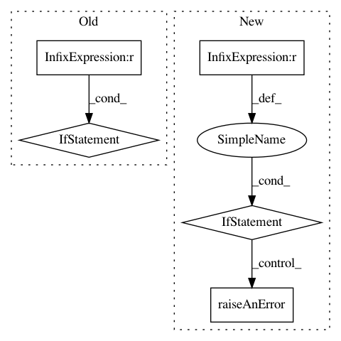

9a0e0b4a450fe0f2f7118182adab6a47dd241964,framework/Optimizers/SPSA.py,SPSA,localInputAndChecks,#SPSA#Any#,79
Before Change
//FIXME normalizing doesn"t seem to have the desired effect, currently; it makes the step size very small (for large scales)
//if "a" was defaulted, use the average scale of the input space.
//This is the suggested value from the paper, missing a 1/gradient term since we don"t know it yet.
if self.paramDict["a"] is None:
self.paramDict["a"] = mathUtils.hyperdiagonal(np.ones(numValues)) // the features are always normalized
self.raiseAMessage("Defaulting "a" gradient parameter to",self.paramDict["a"])
else:
self.paramDict["a"] = float(self.paramDict["a"])
self.constraintHandlingPara["innerBisectionThreshold"] = float(self.paramDict.get("innerBisectionThreshold", 1e-2))
self.constraintHandlingPara["innerLoopLimit"] = float(self.paramDict.get("innerLoopLimit", 1000))
self.gradDict["pertNeeded"] = self.gradDict["numIterForAve"] * (self.paramDict["pertSingleGrad"]+1)
After Change
.format(self.paramDict["pertDist"]))
self.constraintHandlingPara["innerBisectionThreshold"] = float(self.paramDict.get("innerBisectionThreshold", 1e-2))
if not 0 < self.constraintHandlingPara["innerBisectionThreshold"] < 1:
self.raiseAnError(IOError,"innerBisectionThreshold must be between 0 and 1; got",self.constraintHandlingPara["innerBisectionThreshold"])
self.constraintHandlingPara["innerLoopLimit"] = float(self.paramDict.get("innerLoopLimit", 1000))
self.gradDict["pertNeeded"] = self.gradDict["numIterForAve"] * (self.paramDict["pertSingleGrad"]+1)
// determine the number of indpendent variables (scalar and vectors included)
stochDist = self.paramDict.get("stochasticDistribution", "Hypersphere")
if stochDist == "Bernoulli":
self.stochasticDistribution = Distributions.returnInstance("Bernoulli",self)
self.stochasticDistribution.p = 0.5
self.stochasticDistribution.initializeDistribution()
// Initialize bernoulli distribution for random perturbation. Add artificial noise to avoid that specular loss functions get false positive convergence
// FIXME there has to be a better way to get two random numbers
self.stochasticEngine = lambda: [(0.5+randomUtils.random()*(1.+randomUtils.random()/1000.*randomUtils.randomIntegers(-1, 1, self))) if self.stochasticDistribution.rvs() == 1 else
-1.*(0.5+randomUtils.random()*(1.+randomUtils.random()/1000.*randomUtils.randomIntegers(-1, 1, self))) for _ in range(numValues)]
elif stochDist == "Hypersphere":
// TODO assure you can"t get a "0" along any dimension! Need to be > 1e-15. Right now it"s just highly unlikely.
self.stochasticEngine = lambda: randomUtils.randPointsOnHypersphere(numValues) if numValues > 1 else [randomUtils.randPointsOnHypersphere(numValues)]
else:
self.raiseAnError(IOError, self.paramDict["stochasticEngine"]+"is currently not supported for SPSA")
def localLocalInitialize(self, solutionExport):
Method to initialize local settings.
@ In, solutionExport, DataObject, a PointSet to hold the solution
@ Out, None
self._endJobRunnable = (self._endJobRunnable*self.gradDict["pertNeeded"])+len(self.optTraj)
// set up cycler for trajectories
self.trajCycle = cycle(self.optTraj)
// build up queue of initial runs
for traj in self.optTraj:
// for the first run, set the step size to the initial step size
self.counter["lastStepSize"][traj] = self.paramDict["initialStepSize"]
// construct initial point for trajectory
values = {}
for var in self.getOptVars():
// user-provided points
values[var] = self.optVarsInit["initial"][var][traj]
// assure points are within bounds; correct them if not
values[var] = self._checkBoundariesAndModify(self.optVarsInit["upperBound"][var],
self.optVarsInit["lowerBound"][var],
self.optVarsInit["ranges"][var],
values[var], 0.99, 0.01)
// normalize initial point for this trajectory
data = self.normalizeData(values)
// store (unnormalized?) point in history
self.updateVariableHistory(values,traj)
// set up a new batch of runs on the new optimal point (batch size 1 unless more requested by user)
self.queueUpOptPointRuns(traj,data)
// set up grad point near initial point
pertPoints = self._createPerturbationPoints(traj,data)
// set up storage structure for results
self._setupNewStorage(traj)
//////////////////////////////
// Run Methods //
//////////////////////////////
def localStillReady(self, ready, convergence = False):
Determines if optimizer is ready to provide another input. If not, and if jobHandler is finished, this will end sampling.
@ In, ready, bool, variable indicating whether the caller is prepared for another input.
@ In, convergence, bool, optional, variable indicating whether the convergence criteria has been met.
@ Out, ready, bool, variable indicating whether the caller is prepared for another input.
// accept unreadiness from another source if applicable
if not ready:
return ready
if any(len(self.submissionQueue[t]) for t in self.optTraj):
return True
return False
def localGenerateInput(self,model,oldInput):
Method to generate input for model to run
@ In, model, model instance, it is the instance of a RAVEN model
@ In, oldInput, list, a list of the original needed inputs for the model (e.g. list of files, etc. etc)
@ Out, None
GradientBasedOptimizer.localGenerateInput(self,model,oldInput)
// find something to submit
for _ in self.optTraj:
// get next trajectory in line, which assures each gets fair treatment in submissions
traj = next(self.trajCycle)
// if this trajectory has a run to submit, populate the submission dictionaries
if len(self.submissionQueue[traj]):
prefix, point = self.getQueuedPoint(traj)
for var in self.getOptVars():
self.values[var] = point[var]
In pattern: SUPERPATTERN
Frequency: 3
Non-data size: 5
Instances
Project Name: idaholab/raven
Commit Name: 9a0e0b4a450fe0f2f7118182adab6a47dd241964
Time: 2019-01-31
Author: paul.talbot@inl.gov
File Name: framework/Optimizers/SPSA.py
Class Name: SPSA
Method Name: localInputAndChecks
Project Name: idaholab/raven
Commit Name: 79c1d265126b3e1551e60d503817de830dac241f
Time: 2019-11-11
Author: paul.talbot@inl.gov
File Name: framework/Samplers/Stratified.py
Class Name: Stratified
Method Name: localInputAndChecks
Project Name: idaholab/raven
Commit Name: b61879b8f78d7709be5eb12d8fa44832f0e9c362
Time: 2017-07-03
Author: paul.talbot@inl.gov
File Name: framework/Optimizers/Optimizer.py
Class Name: Optimizer
Method Name: initialize